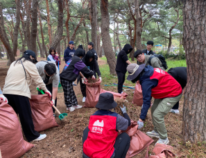
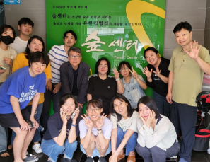
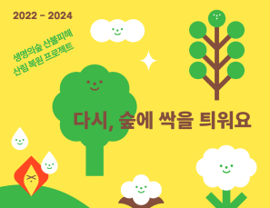
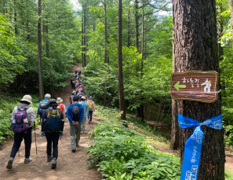

생명의숲이 시민의 힘으로 만들어 갑니다.
그린짐은 몸과 마음을 건강하게 합니다 우리 지역사회와 자연환경을 건강하게 합니다
기념하고 싶은 날! 서울 곳곳에 나무 한 그루 심어보는 건 어떠세요?
생명의숲은 숲을 통해 사회문제를 해결하고, 모두가 누리는 5분 거리의 숲을 만들기를 꿈꿉니다.
시민의 힘으로 나무를 심고 숲을 가꾸고 보전하며, 숲의 공공성을 높여 누구나 숲의 가치를 누리는 건강한 사회를 만들어 가고자 합니다.
도시숲, 학교숲, 숲환경교육, 사회복지숲 등의 시민과 함께한 다양한 활동 이야기입니다.
생명의숲은 지난 봄부터 "Make Us Green in Forest - FOREST CREW" 캠페인을 전국에서 실행하고 있습니다. 이 캠페인은 카카오메이커스의 후원을 통해 강원영동, 경북, 부산, 대전충남, 울산에서 활발히 진행되고 있습니다. 이 글을 통해 캠페인의 시작과 그동안의 성과, 그리고 앞으로의 계획을 나누고자 합니다. FOREST CREW는 이 캠페인에 참여한 그리고 참여할 모든 분들을 뜻합니다.

잦은 비와 폭염으로 습한 날씨가 이어지고 있는데요, 여러분은 어떻게 지내시나요? 생명의숲이 드.디.어. 사무처 이전을 마쳤다는 소식을 여러분에게 전합니다. 정말 많은 분들의 응원 덕분에 안전하게 이사를 마칠 수 있었는데요. 준비 과정부터 지금까지의 시간을 만나보세요.

2022년부터 2024년까지 2년간, 다시 숲에 싹을 틔운 이야기 # 2022년 3월 13일, 213시간만에 꺼진 산불 2022년 3월 4일, 경북 울진군 야산에서 시작된 산불은 213시간만인 3월 13일, 천금같은 단비로 완전히 진화되었습니다.

메마른 겨울이 지나고 초록 싹이 슬슬 보이는 4월. 흩날리는 벚꽃잎 속에서 어김없이 올해 식목일에도 생명의 숲은 시민분들과 함께 나무를 심었습니다.이번 나무심기는 신입 활동가로 설레고도 긴장되는 첫 행사였습니다. 혹시나 잘못 안내하면 어떡하나 이런저런 생각이 많았는데, 걱정이 무색하게 다들 열심히 안내를 듣고 꼼꼼히 심는 모습에 고민은 싹 사라졌습니다. 긴장 할 때만 해도 날이 살짝 흐렸는데, 어느새 기분도 밝아지고 햇살도 듬뿍 들어와있었습니다.
